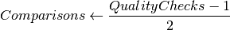

Steepest Ascent Examples¶
These are examples for the Hill-Climbing with Steepest Ascent meta-heuristic.
Contents:
A Normal Distribution Example¶
The SteepestAscent climber with UniformConvolution is more aggresive than the hill-climber but still has a problem with local-optima so I’ll just test it on the normal-data here.

SteepestAscent |
NormalSimulation |
StopConditionIdeal |
UniformConvolution |
XYSolution |
|
XYTweak |
# python standard library
from collections import OrderedDict
# third party
import numpy
# this package
from optimization.datamappings.normalsimulation import NormalSimulation
from optimization.components.stopcondition import StopConditionIdeal
from optimization.components.convolutions import UniformConvolution, Gaussi
anConvolution
from optimization.components.xysolution import XYSolution, XYTweak
from optimization.optimizers.steepestascent import SteepestAscent
outcomes = OrderedDict()
simulator = NormalSimulation(domain_start=-4,
domain_end=4,
steps=1000)
stop = StopConditionIdeal(ideal_value=simulator.ideal_solution,
delta=0.0001,
time_limit=300)
tweak = UniformConvolution(half_range=0.1,
lower_bound=simulator.domain_start,
upper_bound=simulator.domain_end)
xytweak = XYTweak(tweak)
# try a bad-case to start
inputs = numpy.array([simulator.domain_start])
candidate = XYSolution(inputs=inputs)
climber = SteepestAscent(solution=candidate,
stop_condition=stop,
tweak=xytweak,
quality=simulator,
local_searches=4)
outcomes['Uniform Normal'] = run_climber(climber)
Solution: Inputs: [-0.01712284] Output: 0.398862340139
Ideal: 0.398939082483
Difference: -7.67423442817e-05
Elapsed: 0.008633852005
Quality Checks: 601
Comparisons: 300.0
Solutions: 58
Solutions/Comparisons: 0.193333333333
The number of quality checks is related to the number of comparisons made between candidate solutions:
if Quality(solution) > Quality(candidate):
solution = candidate
Each comparison uses two checks and there is an initializing check before the optimization starts (to establish the first candidate as the best solution found so far). So the total number of comparisons is:

The x-axis in the figure shows the number of times a better solution was found and the y-axis is the value (quality) of the solution. In this case the solution is a point on the x-axis and the quality is the height of the curve for the solution.
The blue-line in the figure is a plot of the data-set while the red line is the solution found by the hill-climber.
Changing the Parameters¶
The two main parameters that will affect the performance of the climber will be the number of local searches (SteepestAscent.local_searches) it does and the size of the random changes it makes (UniformConvolution.half_range). In this case we know that the input-data is actually one-dimensional and the distribution is unimodal so it might help to reduce the number of local searches and increase the half-range to see if it will climb faster.
candidate.output = None
climber._solutions = None
climber.solution = candidate
stop._end_time = None
climber.local_searches = 8
tweak.half_range = 1
run_climber(climber)
Solution: Inputs: [-0.01748886] Output: 0.398862340139
Ideal: 0.398939082483
Difference: -7.67423442817e-05
Elapsed: 0.00139498710632
Quality Checks: 692
Comparisons: 345.5
Solutions: 5
Solutions/Comparisons: 0.0144717800289
I tried it with different numbers of local-search values and it actually seems to take longer if you go with either fewer or more of them. I guess if there are too few then you run a greater risk of moving in the wrong-direction and if there are too many you multiply the number of searches you make before checking the overall-best solution so it inevitably uses more comparisons. I guess the parameters have to be tuned according to the data with a certain amount of trial and error.
Needle In a Haystack¶
Now a Needle in a Haystack case.
simulator.reset()
simulator.domain_start = -100
simulator.domain_end = 150
simulator.steps = 10000
candidate.output = None
climber._solutions = None
climber.solution = candidate
climber.emit = False
stop._end_time = None
stop.ideal_value = simulator.ideal_solution
stop.delta = 0.001
outcomes['Uniform Needle'] = run_climber(climber)
Solution: Inputs: [ 0.03634837] Output: 0.398697954224
Ideal: 0.398922329796
Difference: -0.000224375571834
Elapsed: 0.00327515602112
Quality Checks: 127
Comparisons: 63.0
Solutions: 7
Solutions/Comparisons: 0.111111111111
Since the solutions are randomly generated, the figures don’t look exactly the same every time, but usually the solutions-plot for the needle in a haystack case will show a large dip in it as the hill-climber accidentally overshoots the peak. Since we’re using Steepest Ascent Hill Climbing it can usually find its way back, as long as the curve has information for it and the amount of randomization is small-enough that it will eventually find the peak. In this case I’m actually cheating by using a Normal Curve, since it always has a slope leading to the peak. A true needle in the haystack case would have flat ends, but this hill climber has no real way to find that case except by chance.
Using Gaussian Convolution¶
The UniformConvolution used as the tweak tends to get stuck in local optima. You can make the half-range larger but then it will have a harder time finding an optima as it approaches randomness. One way to improve the hill-climbers is to sample random values from a normal distribution. Since 68% of the points are within one standard deviation from the mean, 95% are within two standard deviations from the mean, 99% are within three standard deviations, etc., you will tend to get most sampled points centered around the mean (0 for the standard-normal distribution) and only occasionally will you get samples that are far from the mean.
As a comparison, I’ll first use a data-set that has local optima. Using the UniformConvolution doesn’t always find the solution (because it’s stuck at a local optima) so I’m only going to run the gaussian convolution version.
# change the randomization
tweak = GaussianConvolution(lower_bound=simulator.domain_start,
upper_bound=simulator.domain_end)
tweaker = XYTweak(tweak)
climber._solutions = None
climber.tweak = tweaker
# change the dataset
simulator.functions = [lambda x: numpy.sin(x),
lambda x: numpy.cos(x)**2]
simulator._range = None
simulator.quality_checks = 0
candidate.output = None
simulator(candidate)
climber.solution = candidate
stop.ideal_value = simulator.ideal_solution
stop._end_time = None
# run the optimization
outcomes['Gaussian Noise'] = run_climber(climber)
Solution: Inputs: [ 0.43583544] Output: 1.60675092559
Ideal: 1.60675092559
Difference: 0.0
Elapsed: 0.33668088913
Quality Checks: 13340
Comparisons: 6669.5
Solutions: 8
Solutions/Comparisons: 0.00119949021666
Gaussian Convolution Normal Example¶
To see how the two algorithms compare we can re-run the normal example using the GaussianConvolution.
simulator.reset()
simulator.domain_start = -4
simulator.domain_end = 4
simulator.steps = 1000
candidate.output = None
climber._solutions = None
climber.solution = candidate
stop._end_time = None
stop.ideal_value = simulator.ideal_solution
outcomes['Gaussian Normal'] = run_climber(climber)
Solution: Inputs: [ 0.00265114] Output: 0.398939082483
Ideal: 0.398939082483
Difference: 0.0
Elapsed: 0.00111103057861
Quality Checks: 73
Comparisons: 36.0
Solutions: 4
Solutions/Comparisons: 0.111111111111
Gaussian Convolution Needle Example¶
simulator.reset()
simulator.domain_start = -100
simulator.domain_end = 150
simulator.steps = 10000
candidate.output = None
climber._solutions = None
climber.solution = candidate
stop._end_time = None
stop.ideal_value = simulator.ideal_solution
outcomes['Gaussian Needle'] = run_climber(climber)
Solution: Inputs: [-0.03550444] Output: 0.398623190415
Ideal: 0.398922329796
Difference: -0.000299139380939
Elapsed: 0.00325894355774
Quality Checks: 127
Comparisons: 63.0
Solutions: 4
Solutions/Comparisons: 0.0634920634921

Gaussian Convolution Sphere¶
This uses a 3-d spherical dataset.
import numpy
from optimization.datamappings.examples.functions import SphereMapping
# for plotting only we want few steps
plot_sphere = SphereMapping(steps=120)
# for data we want more
data_sphere = SphereMapping()
output = 'figures/sphere_plot.svg'
figure = plt.figure()
axe = figure.add_subplot(111, projection='3d')
X = numpy.linspace(-5.12, 5.12, 100)
Y = numpy.linspace(-5.12, 5.12, 100)
X, Y = numpy.meshgrid(X, Y)
Z = X**2 + Y**2
surface = axe.plot_wireframe(X,
Y,
Z,
rstride=5, cstride=5)
figure.savefig(output)
# change the data source to the sphere mapping
simulator = data_sphere.mapping
climber.quality = simulator
# change the limits of the tweak
tweak.lower_bound = data_sphere.start
tweak.upper_bound = data_sphere.stop
# change the candidate to 2D
candidate.inputs = numpy.array([0,0])
candidate.output = None
climber._solutions = None
climber.solution = candidate
stop._end_time = None
stop.ideal_value = simulator.ideal
outcomes['Gaussian Sphere'] = run_climber(climber)
Solution: Inputs: [ 5.12 -5.12] Output: 52.4288
Ideal: 52.4288
Difference: 0.0
Elapsed: 0.00174617767334
Quality Checks: 109
Comparisons: 54.0
Solutions: 6
Solutions/Comparisons: 0.111111111111
| Solutions | Comparisons | Solutions/Comparisons | |
|---|---|---|---|
| Uniform Normal | 58.000 | 300.000 | 0.193 |
| Uniform Needle | 7.000 | 63.000 | 0.111 |
| Gaussian Noise | 8.000 | 6669.500 | 0.001 |
| Gaussian Normal | 4.000 | 36.000 | 0.111 |
| Gaussian Needle | 4.000 | 63.000 | 0.063 |
| Gaussian Sphere | 6.000 | 54.000 | 0.111 |